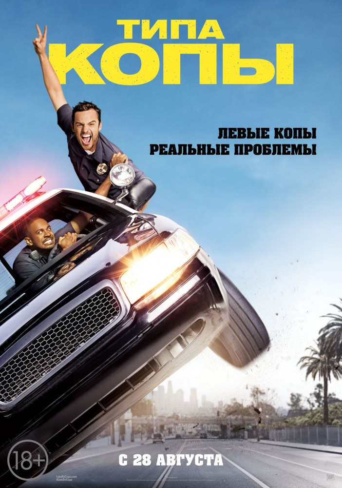
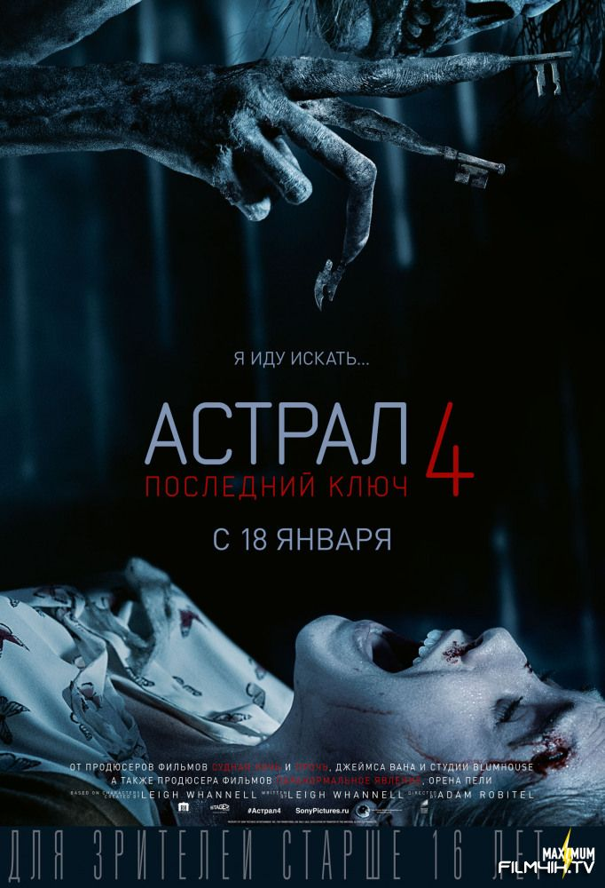
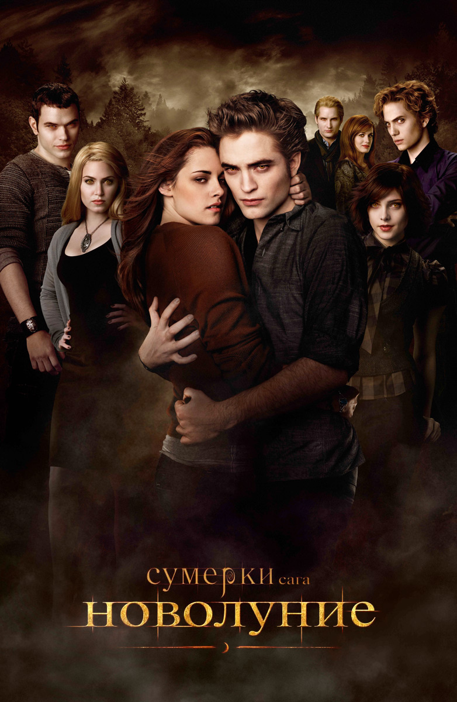
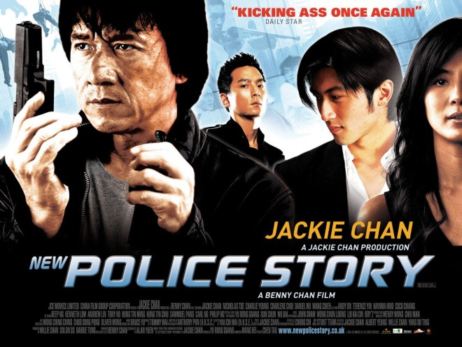
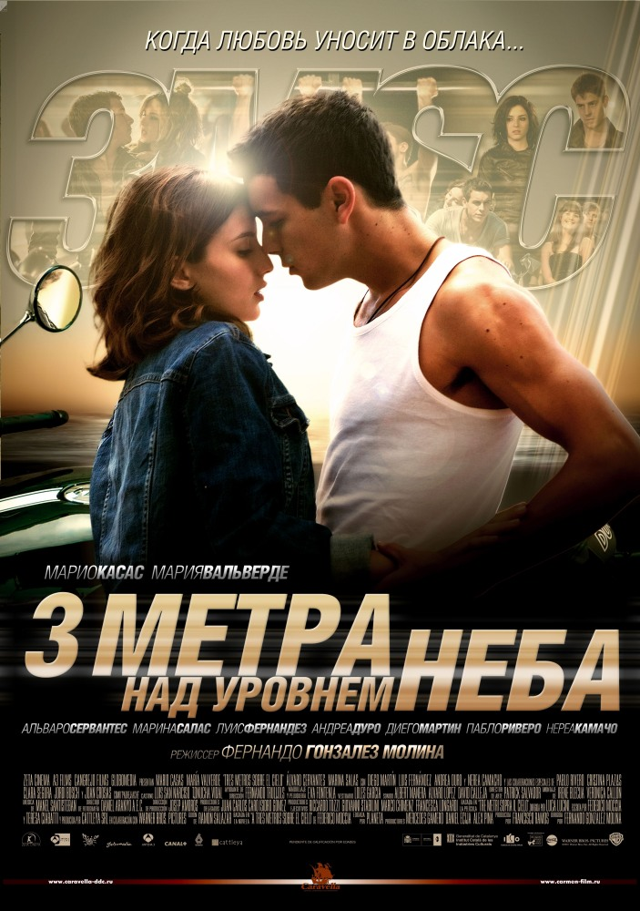
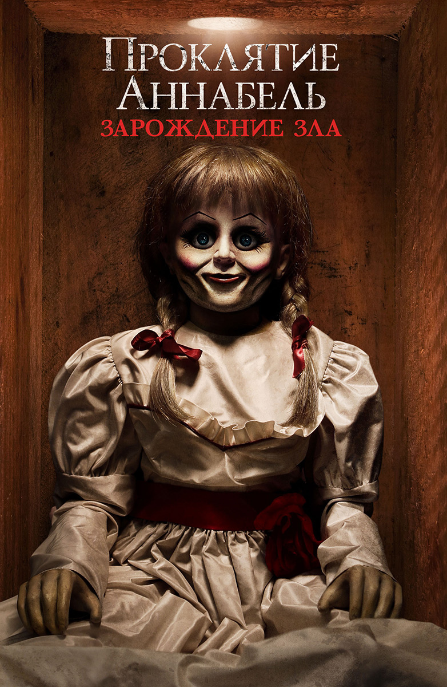

Комедия

Жанр кино, основной предмет которого — явления, относящиеся к эстетической категории комического. Отличительная особенность — изображение жизненных несоответствий, возбуждающих смех зрителей.
Триллер

Особый тип приключенческого фильма, вызывающий у зрителей специальными приёмами активное сопереживание и сильные эмоции (тревожное ожидание, беспокойство, страх и пр.). Акцент с внешних действий смещается на психологические переживания персонажей, связанные с преступлением. В триллере рассказ ведётся с точки зрения жертвы или преступника
Фэнтези

Фэ́нтези, (также фэ́нтази, фэ́нтэзи, фе́нтези)(англ. fantasy — «фантазия») — жанр фантастической литературы, кинематографа, живописи, компьютерных, ролевых и настольных игр, основанный на использовании мифологических и сказочных мотивов. В современном виде сформировался в начале XX века. С середины века огромное влияние на формирование современного облика фэнтези оказал Джон Рональд Руэл Толкин.
Боевик

Приключенческий фильм с многочисленными эпизодами погони, стрельбы, поединков и т. п.
Драма

Один из основных жанров драматургии наряду с трагедией и комедией. Как и комедия, отражает прежде всего частную жизнь людей. Но главная цель не осмеяние человеческих характеров и нравов, а показ личности в её драматических отношениях с обществом. Как и трагедия, изображает героев в процессе их духовного становления или нравственных изменений. Но характеры лишены исключительности, а конфликты не столь напряжённы и в принципе не исключают разрешения
Ужасы

Тематически обширный и разнообразный круг фильмов, показывающих явления загадочные, анормальные, сверхъестественные с задачей вызвать у зрителей чувство страха